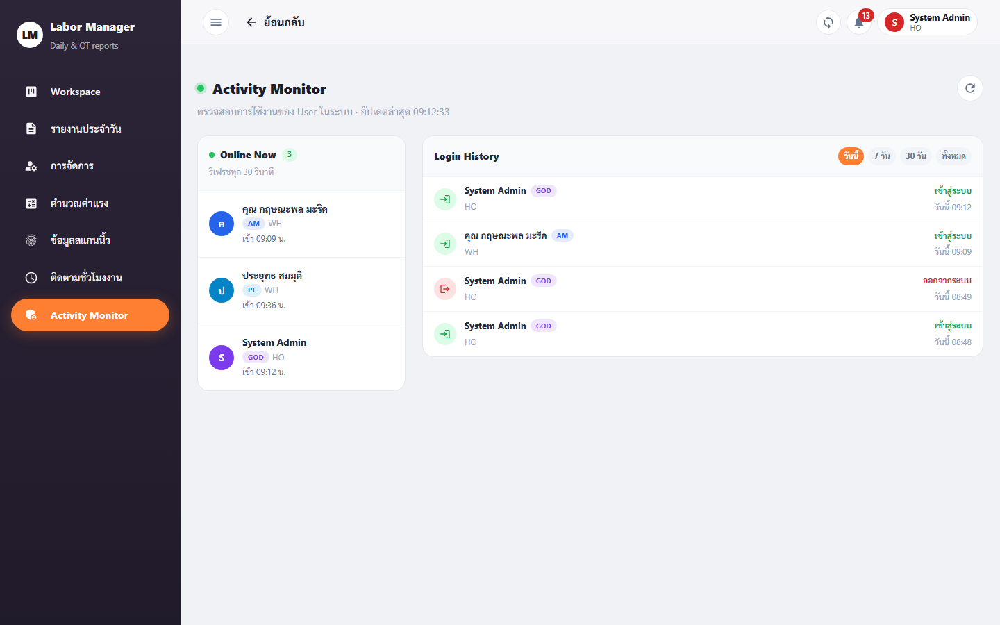

GOD คือบทบาทสูงสุดของระบบ — เข้าถึงและทำได้ทุกอย่าง ทุกเมนูที่บทบาทอื่นทำได้ GOD ทำได้หมด และมีเมนูพิเศษที่ มีเฉพาะ GOD เท่านั้น คือ Activity Monitor (ตรวจสอบกิจกรรมการใช้งานของผู้ใช้ทุกคน)
หน้า /activity-monitor ใช้ ตรวจสอบการใช้งานของผู้ใช้ในระบบ — ดูว่าตอนนี้ใครออนไลน์อยู่บ้าง
และดูประวัติการเข้าสู่ระบบ/ออกจากระบบ (login/logout) ของผู้ใช้แต่ละคน

กดลิงก์เพื่อเปิดวิธีใช้แบบทีละขั้นตอนในหน้าของบทบาทเจ้าของฟีเจอร์:
| ฟีเจอร์ | เปิดวิธีใช้ที่ |
|---|---|
| Member Management (จัดการสมาชิก) | หน้า AM › Member Management |
| DC Management (แรงงานรายวัน) | หน้า AM › DC Management |
| Wage Calculation (คำนวณค่าแรง) | หน้า AM › Wage Calculation |
| Scan Data Monitoring | หน้า AM › Scan Data |
| Work Hour Monitoring | หน้า AM › Work Hour |
| SSO Rules (กฎประกันสังคม) | หน้า AM › SSO Rules |
| Company Holidays (วันหยุด) | หน้า AM › Company Holidays |
| Workspace (กระดานงาน) | หน้า PM › Workspace |
| Workspace · Requests (ตารางแรงงาน) | หน้า PM › Requests |
| Project Management (จัดการโครงการ) | หน้า PM › Project Management |
| Daily Reports (รายงานประจำวัน) | หน้า SE/FM › Daily Reports |
| Overtime (ทำงานล่วงเวลา) | หน้า SE/FM › Overtime |